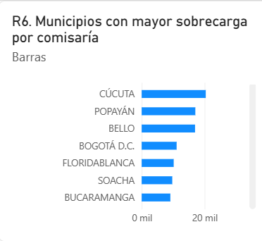

Sistema integral de datos que combina análisis histórico y procesamiento en tiempo real para anticipar la sobrecarga en Comisarías de Familia en Colombia.
Ley 2126 de 2021 & ODS 5 y 16
Michael Cardona • Sebastián Manrique • Sebastián Torres • David Hernández
Por qué las cifras de denuncias solas no son suficientes para tomar decisiones.
Medir solo la cantidad de denuncias de violencia intrafamiliar. Esto mostraba qué ciudades tenían más casos, pero escondía la realidad de si el municipio tenía la infraestructura suficiente para proteger a las personas.
Tener muchas denuncias puede significar solo que hay una oficina abierta donde denunciar.
Cruzamos las denuncias policiales con la capacidad real de las Comisarías de Familia y el estándar de la Ley 2126 (mínimo 1 comisaría por cada 100.000 habitantes).
¿Dónde están desbordadas las comisarías y dónde faltan oficinas mientras aumentan los ataques a mujeres y niños?
Separar la estrategia histórica de la reacción operativa inmediata.
Para entender la tendencia y planear presupuestos e infraestructura.
Para reaccionar en segundos ante casos graves o sobrecargas críticas.
Flujo limpio desde la recolección hasta los dos tableros de visualización.
Se extraen datos de la Policía Nacional y la API de Comisarías. Great Expectations valida que no existan datos corruptos antes de guardarlos.
El Data Warehouse en PostgreSQL organiza las tablas en esquema estrella (tiempo, geografía, víctimas, armas y comisarías), asegurando cero duplicados.
Apache Kafka distribuye los nuevos casos; el consumidor valida el formato y actualiza métricas en vivo en un tablero interactivo.
Regla de oro de ingeniería: Si una prueba de calidad falla en Airflow, la carga al Data Warehouse se bloquea automáticamente para no contaminar los reportes.
Hallazgos principales del tablero analítico en Power BI (Requerimientos R1 a R7).
1.16 millones de reportes concentrados en población femenina.
Brecha legal bajo la Ley 2126 a nivel nacional.
Ciudades como Cúcuta tienen solo 1 comisaría frente a más de 20.000 víctimas y un déficit de 8 comisarías legales, acumulando 51 ataques con armas letales contra menores.

Captura del Tablero en Power BI
Archivo listo: dashboard/batch/Dashboard-Poryecto2.pbix
Cómo garantizamos que cada evento que llega sea confiable y seguro.
Simula la llegada de denuncias policiales con variación real de municipios, armas y víctimas. Evita números estáticos repetitivos.
Construido con Pydantic. Si un mensaje no tiene código DANE válido, le falta la fecha o trae datos rotos, es rechazado de inmediato.
Los mensajes con errores van a una tabla de cuarentena (Dead-Letter Queue). El sistema no colapsa ni detiene el flujo.
Las 3 Métricas en Vivo: (1) Total de casos y víctimas al instante • (2) Porcentaje de casos con armas letales y menores de edad • (3) Alertas activas por incidentes en ciudades con déficit de comisarías.
Supervisión operativa con refresco automático cada 3 segundos.
⚡ Ejecutable al instante: Corre localmente en el navegador conectándose a PostgreSQL sin configuraciones complejas.
Demostración en Vivo: Streamlit Dashboard
Se activa en vivo ejecutando:streamlit run dashboard/app_realtime.py
Demostración práctica de que el sistema resiste fallos reales.
¿Qué probamos? Se envió intencionalmente un evento con fecha corrupta y víctimas negativas.
El validador lo atrapó, lo envió a la tabla de anomalías (DLQ) y el consumidor continuó procesando los siguientes eventos sin detenerse.
¿Qué probamos? Se apagó el consumidor mientras el productor seguía enviando casos.
Kafka retuvo los mensajes en el buffer. Al reanudar el consumidor, leyó exactamente el backlog pendiente con 0% de pérdida de datos.
Ambas pruebas se ejecutan de forma automatizada mediante el script: streaming/test_resilience.py
De datos dispersos a herramientas reales para la protección de personas.
No permitimos que datos con errores lleguen a las tablas finales gracias a validaciones automáticas en cada etapa.
El sistema demuestra con datos exactos qué municipios necesitan urgentemente nuevas Comisarías de Familia para cumplir la ley.
Integramos tecnologías estándar de la industria (Airflow, Kafka, Postgres, Docker) en un proyecto 100% reproducible.
¿Preguntas o demostración en vivo del pipeline?